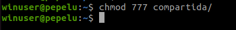
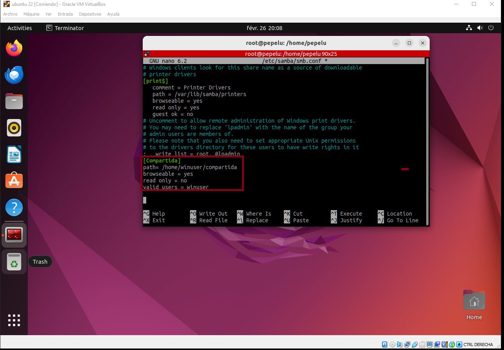
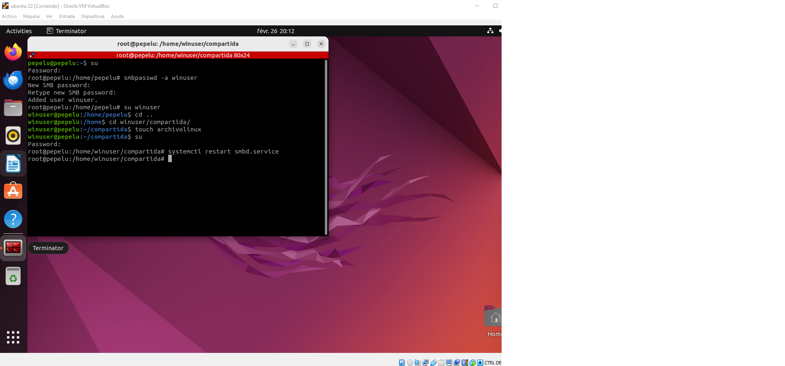
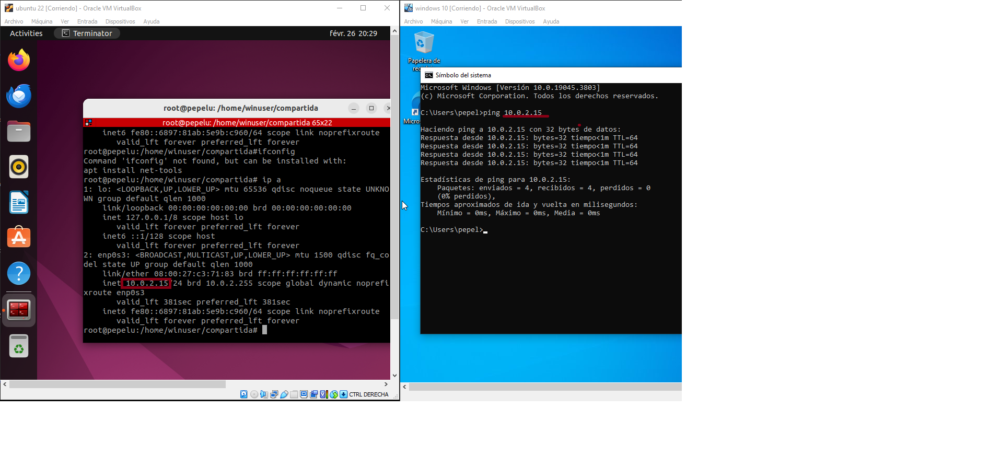
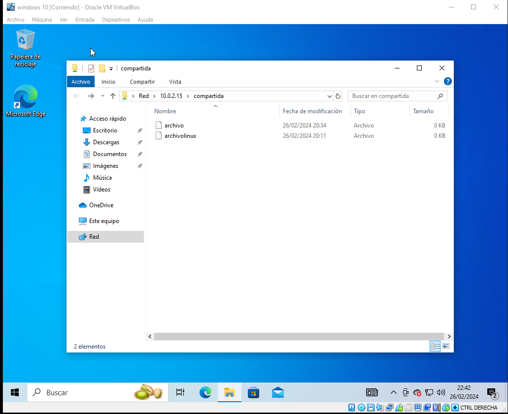

Instalación de SAMBA
Para instalar SAMBA, debemos instalar el paquete samba
Usamos el comando 'su', damos Enter, nos pasamos a root, introducimos la contraseña y cuando estemos en root, ingresamos el comando 'apt upgrade' y presionamos Enter.

A continuacion usamos el comando apt upgrade y le damos a enter.
Ahora instalamos Samba con el comando 'apt install samba' y le damos Enter.

Creamos un nuevo usuario para conectarnos y compartir los documentos.

Nos logamos como el usuario. Y vamos a su carpeta personal y creamos una nueva “compartida” a la que le damos permisos:


Como Administrador instalamos vim. El editor de texto plano de Linux.
Cuando metamos el comando le damos a enter.

Cuando está instalado, como root editamos con vim el archivo de configuración:

Dentro de Vim vamos al final y escribimos al final del documento (tecla Insert)
Salimos de vim pulsando escape y escribiendo: wq (write, quit)
Ahora tenemos que añadir a winuser a los usuarios de samba y ponerle una contraseña (seguimos como root):smbpasswd –a winuser le damos enter y Ahora nos cambiamos al usuario winuser para crear un archivo dentro de la carpeta compartida.
Ya solo nos queda resetear el servicio samba desde root.su enter (contraseña) systemctl restart smbd.service enter. (Si nos diera error porque no estuviera en ejecución: reload-or-restart)
Ahora miramos la dirección ip de la máquina (la otorga virtualbox) y la anotamos.
Nos vamos a Windows Probamos que tenemos la carpeta compartida entre las dos maquinas.
 Regresar